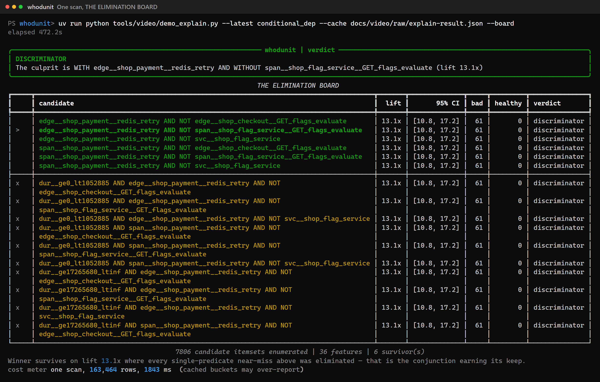
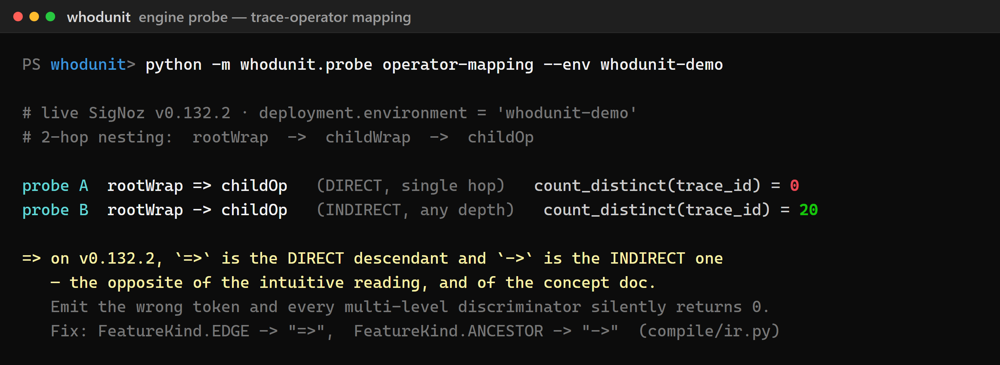
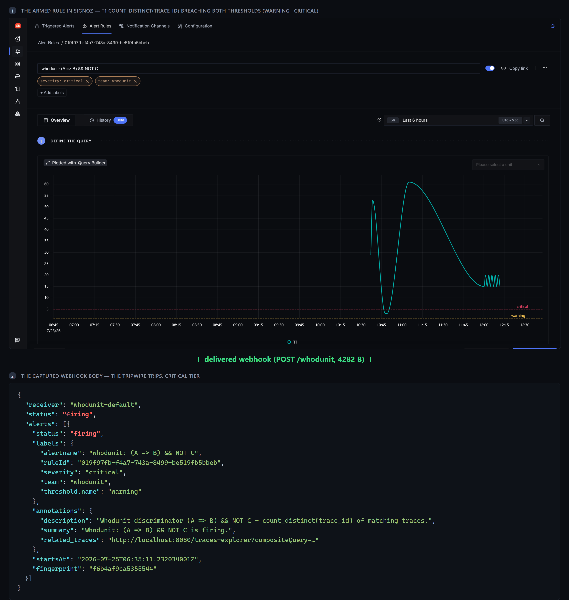
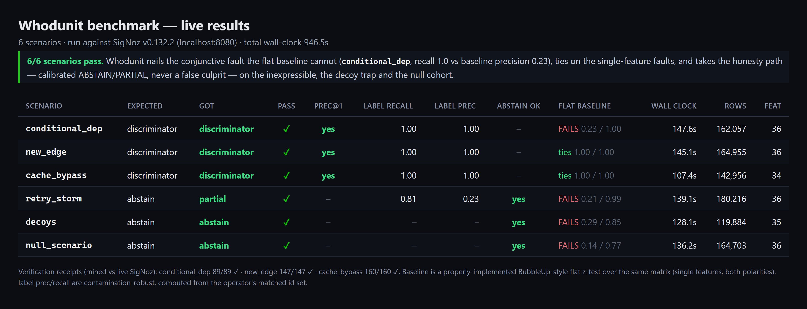

You point Whodunit at them. It auto-selects a case-control–matched healthy cohort and runs one deterministic pipeline — extract → mine → compile → verify → arm. No LLM anywhere.
docs/video/raw/explain-result.json. Nothing is fabricated for the demo; there is no LLM in the runtime.One clickhouse_sql scan builds a per-trace boolean matrix (span predicates, parent→child edges, log features — joined by trace_id in the same store). FP-growth then enumerates the complete itemset lattice before any test runs, so the FDR control is valid. It shows its work: the obvious single-predicate answers are eliminated because each appears in both cohorts. Only the conjunction survives.
| candidate itemset | lift | 95% CI | bad | healthy | verdict |
|---|
Rows marked ✗ are near-misses struck out: adding a duration bucket to the winning pair changes nothing (same 61 / 0), so they are dominated and pruned. Single-predicate candidates never even reach here — each appears in both cohorts.

The crown jewel. The winning itemset is lowered into a valid SigNoz builder_trace_operator envelope — respecting engine constraints (operator direction, left-bias, trace-scoped NOT) that were recovered by probing the live v0.132.2 engine.
service.name = 'shop-payment'name = 'redis-retry'service.name = 'shop-flag-service' AND name = 'GET /flags/evaluate'⇒ is the direct (single-hop) descendant operator; the outcome operand is normalised left so a real Trace Explorer link returns the right spans. Absence is only expressible anchored to a positive operand — a bare NOT C returns zero and is refused.
The synthesized query is not trusted — it is run against SigNoz as a scalar count_distinct(trace_id) and asserted equal to the miner's own local count. This is the differential receipt. It is the whole thesis in one row.
The deliverable is a Query Builder artifact you keep: a Trace Explorer permalink, a dashboard panel, and an armed v2alpha1 alert whose webhook fired end-to-end at t+182s.
This is the exact link Whodunit emitted (from docs/video/raw/permalink.txt). It resolves against a running SigNoz at localhost:8080 — the dev stack the run was recorded on — so it opens a real Trace Explorer, not a mock.

Real captured webhook body from docs/video/raw/webhook.log — a v2alpha1 rule on the compiled discriminator delivered end-to-end.

There is no LLM and no randomness in the runtime. The same input plus seed always produces the identical verdict hash. Run it as many times as you like — it never drifts.
Six scenarios run live against the stack, each scored against a machine-checkable ground-truth manifest, with a properly-implemented BubbleUp-style flat baseline for comparison. Whodunit nails the conjunction the baseline can't see, ties on single-feature faults (their home turf), and takes the honesty path — abstain / partial, never a false culprit — where a confident answer would be wrong.
| scenario | ground truth | whodunit | recall | flat baseline | outcome |
|---|
The flagship replay above is seed 778 (61 bad traces). The benchmark aggregates six scenarios at their own seeds 101–106 — e.g. conditional_dep at seed 101 has 89 bad traces. Counts vary with seed; the invariants do not. Full table: benchmark/REPORT.md.
